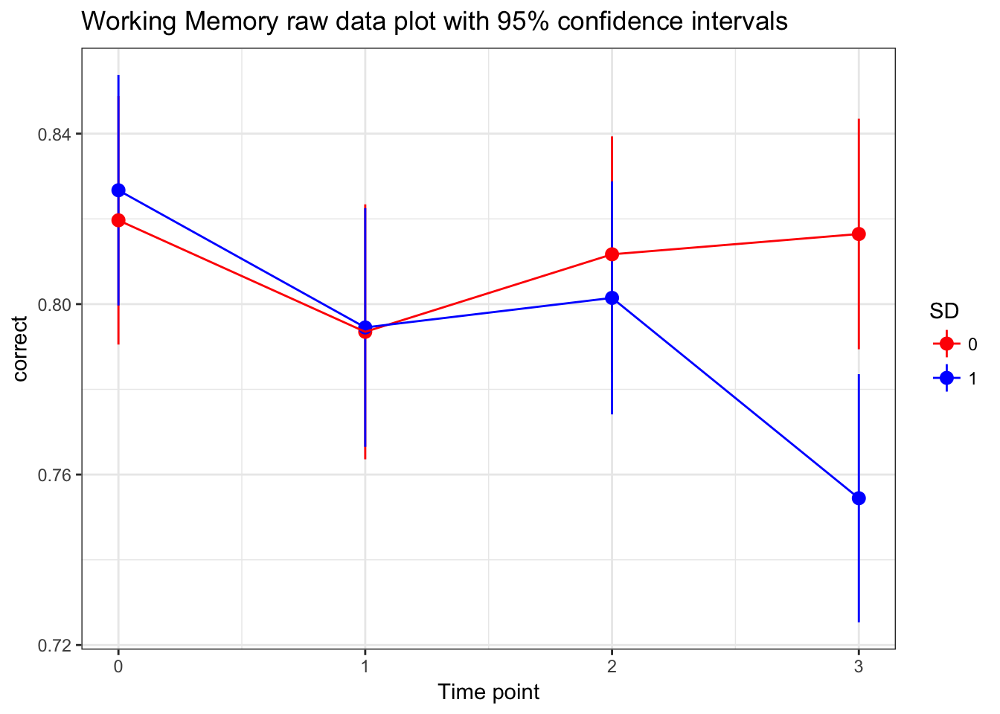
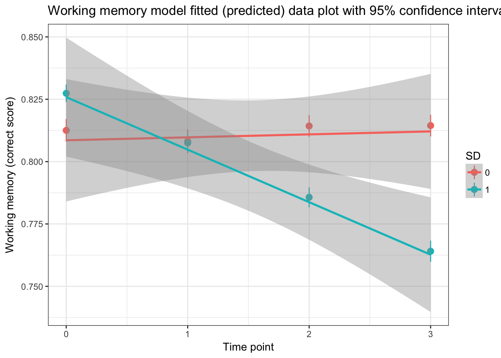
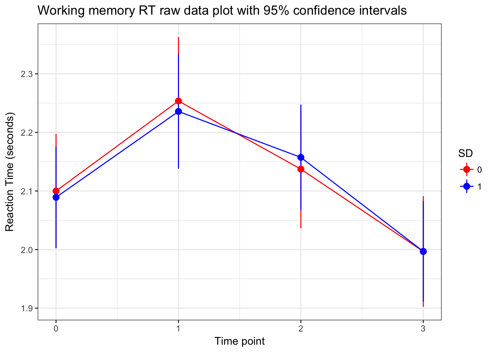
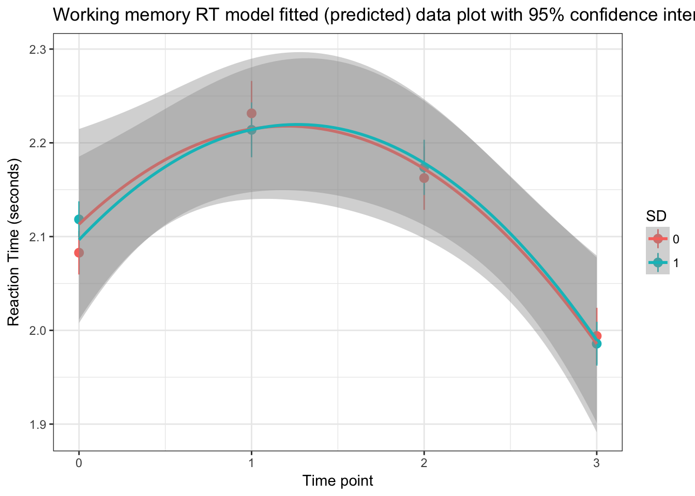

(must respond between 0.1 and 10 seconds)
WM_Complete_TIDY <- WM_Complete_TIDY[which(WM_Complete_TIDY$response_time > 0.1 & WM_Complete_TIDY$response_time < 10),]# assessing the best time polynomial
model.3a<-glmer(correct~1 + (1|ID), data=WM_Complete_TIDY, family=binomial)
model.3b<-glmer(correct~time + (1|ID), data=WM_Complete_TIDY, family=binomial)
model.3c<-glmer(correct~time + I(time^2) + (1|ID), data=WM_Complete_TIDY, family=binomial)
model.3d<-glmer(correct~time + I(time^2) + I(time^3) + (1|ID), data=WM_Complete_TIDY, family=binomial)## Warning in checkConv(attr(opt, "derivs"), opt$par, ctrl = control
## $checkConv, : Model failed to converge with max|grad| = 0.00325052 (tol =
## 0.001, component 1)anova(model.3a, model.3b, model.3c,model.3d) #the normal linear model is the best (but the quadratic is nearly significant)## Data: WM_Complete_TIDY
## Models:
## model.3a: correct ~ 1 + (1 | ID)
## model.3b: correct ~ time + (1 | ID)
## model.3c: correct ~ time + I(time^2) + (1 | ID)
## model.3d: correct ~ time + I(time^2) + I(time^3) + (1 | ID)
## Df AIC BIC logLik deviance Chisq Chi Df Pr(>Chisq)
## model.3a 2 6059.0 6072.5 -3027.5 6055.0
## model.3b 3 6056.3 6076.5 -3025.2 6050.3 4.6781 1 0.03055 *
## model.3c 4 6058.3 6085.2 -3025.1 6050.3 0.0565 1 0.81206
## model.3d 5 6057.8 6091.4 -3023.9 6047.8 2.4634 1 0.11653
## ---
## Signif. codes: 0 '***' 0.001 '**' 0.01 '*' 0.05 '.' 0.1 ' ' 1summary(model.3b)## Generalized linear mixed model fit by maximum likelihood (Laplace
## Approximation) [glmerMod]
## Family: binomial ( logit )
## Formula: correct ~ time + (1 | ID)
## Data: WM_Complete_TIDY
##
## AIC BIC logLik deviance df.resid
## 6056.3 6076.5 -3025.2 6050.3 6158
##
## Scaled residuals:
## Min 1Q Median 3Q Max
## -3.1203 0.3716 0.4399 0.5142 0.8696
##
## Random effects:
## Groups Name Variance Std.Dev.
## ID (Intercept) 0.2402 0.4901
## Number of obs: 6161, groups: ID, 166
##
## Fixed effects:
## Estimate Std. Error z value Pr(>|z|)
## (Intercept) 1.56359 0.06993 22.360 <2e-16 ***
## time -0.06394 0.02944 -2.172 0.0299 *
## ---
## Signif. codes: 0 '***' 0.001 '**' 0.01 '*' 0.05 '.' 0.1 ' ' 1
##
## Correlation of Fixed Effects:
## (Intr)
## time -0.680#additing in fixed variables
model.4a<-glmer(correct~time + (1|ID), data=WM_Complete_TIDY, family=binomial)
model.4b<-glmer(correct~time +SD + (1|ID), data=WM_Complete_TIDY, family=binomial)
model.4c<-glmer(correct~time*SD + (1|ID), data=WM_Complete_TIDY, family=binomial)
anova(model.4a,model.4b, model.4c) #best to add SD:time interaction as predictor## Data: WM_Complete_TIDY
## Models:
## model.4a: correct ~ time + (1 | ID)
## model.4b: correct ~ time + SD + (1 | ID)
## model.4c: correct ~ time * SD + (1 | ID)
## Df AIC BIC logLik deviance Chisq Chi Df Pr(>Chisq)
## model.4a 3 6056.3 6076.5 -3025.2 6050.3
## model.4b 4 6056.4 6083.3 -3024.2 6048.4 1.8796 1 0.17037
## model.4c 5 6053.2 6086.8 -3021.6 6043.2 5.2853 1 0.02151 *
## ---
## Signif. codes: 0 '***' 0.001 '**' 0.01 '*' 0.05 '.' 0.1 ' ' 1# Is it worthwhile adding a random effect of time within individuals?
model.5a<-glmer(correct~time*SD + (1|ID), data=WM_Complete_TIDY, family=binomial)
# model.5b<-glmer(correct~time*SD + (time|ID), data=WM_Complete_TIDY, family=binomial) # doesn't converge
#anova(model.5a,model.5b) #Model 5b doesn't converge so stick to 6aThere is an interaction between the condition and linear effect of time
#best model (pure linear model with SleepCondition interacting with time)
summary(model.5a)## Generalized linear mixed model fit by maximum likelihood (Laplace
## Approximation) [glmerMod]
## Family: binomial ( logit )
## Formula: correct ~ time * SD + (1 | ID)
## Data: WM_Complete_TIDY
##
## AIC BIC logLik deviance df.resid
## 6053.2 6086.8 -3021.6 6043.2 6156
##
## Scaled residuals:
## Min 1Q Median 3Q Max
## -3.0411 0.3694 0.4382 0.5127 0.9103
##
## Random effects:
## Groups Name Variance Std.Dev.
## ID (Intercept) 0.2374 0.4872
## Number of obs: 6161, groups: ID, 166
##
## Fixed effects:
## Estimate Std. Error z value Pr(>|z|)
## (Intercept) 1.51703 0.09955 15.239 <2e-16 ***
## time 0.01040 0.04366 0.238 0.8117
## SD 0.08411 0.13475 0.624 0.5325
## time:SD -0.13804 0.05978 -2.309 0.0209 *
## ---
## Signif. codes: 0 '***' 0.001 '**' 0.01 '*' 0.05 '.' 0.1 ' ' 1
##
## Correlation of Fixed Effects:
## (Intr) time SD
## time -0.682
## SD -0.713 0.503
## time:SD 0.498 -0.738 -0.696WM_Complete_TIDY$SD <- as.factor(WM_Complete_TIDY$SD)
WM.final.model <-glmer(correct~time*SD + (1|ID), data=WM_Complete_TIDY, family=binomial)
#raw data plot with 95% confidence intervals
ggplot(WM_Complete_TIDY, aes(time, correct, colour=SD)) +
stat_summary(fun.data=mean_cl_normal, fun.args=list(conf.int=0.95), geom="pointrange") +
labs(y="correct", x="Time point") +
theme_bw() + scale_color_manual(values=c("red", "blue")) +
ggtitle("Working Memory raw data plot with 95% confidence intervals") +
stat_summary(fun.y=mean, geom="line") 
#fitted model (aka predictive values) plot with 95% confidence intervals
ggplot(WM_Complete_TIDY, aes(time, correct, colour=SD)) +
ggtitle("Working memory model fitted (predicted) data plot with 95% confidence intervals") +
labs(y="Working memory (correct score)", x="Time point") +
theme_bw() + stat_summary(aes(y=fitted(WM.final.model)), fun.data=mean_cl_normal, fun.args=list(conf.int=0.95), geom="pointrange") + stat_smooth(method = "lm")
WM_complete_correct <- WM_Complete_TIDY[which(WM_Complete_TIDY$correct == 1),]
# assessing the best time polynomial
model.7a<-lme(response_time~1, random=~1|ID, data=WM_complete_correct, na.action=na.omit, method="ML")
model.7b<-lme(response_time~time, random=~1|ID, data=WM_complete_correct, na.action=na.omit, method="ML")
model.7c<-lme(response_time~time+I(time^2), random=~1|ID, data=WM_complete_correct, na.action=na.omit, method="ML")
model.7d<-lme(response_time~time+I(time^2)+I(time^3), random=~1|ID, data=WM_complete_correct, na.action=na.omit, method="ML")
anova(model.7a, model.7b, model.7c, model.7d) #best to have quadratic effect## Model df AIC BIC logLik Test L.Ratio p-value
## model.7a 1 3 15590.17 15609.68 -7792.084
## model.7b 2 4 15586.65 15612.67 -7789.323 1 vs 2 5.522767 0.0188
## model.7c 3 5 15568.20 15600.73 -7779.102 2 vs 3 20.441648 <.0001
## model.7d 4 6 15568.90 15607.92 -7778.448 3 vs 4 1.308269 0.2527# assessing the best random effects term
model.8a<-lme(response_time~time+I(time^2), random=~1|ID, data=WM_complete_correct, na.action=na.omit, method="ML")
model.8b<-lme(response_time~time+I(time^2), random=~time|ID, data=WM_complete_correct, na.action=na.omit, method="ML")
model.8c<-lme(response_time~time+I(time^2), random=~time+I(time^2)|ID, data=WM_complete_correct, na.action=na.omit, method="ML")
anova(model.8a,model.8b, model.8c) #having random slopes for quadratic is best## Model df AIC BIC logLik Test L.Ratio p-value
## model.8a 1 5 15568.20 15600.73 -7779.102
## model.8b 2 7 15564.22 15609.75 -7775.109 1 vs 2 7.986222 0.0184
## model.8c 3 10 15551.67 15616.72 -7765.837 2 vs 3 18.543377 0.0003#additing in variables can that explain intercept and slope variability
model.9a<-lme(response_time~time+I(time^2), random=~time+I(time^2)|ID, data=WM_complete_correct, na.action=na.omit, method="ML")
model.9b<-lme(response_time~SD+time+I(time^2), random=~time+I(time^2)|ID, data=WM_complete_correct, na.action=na.omit, method="ML")
model.9c <-lme(response_time~SD*time+I(time^2), random=~time+I(time^2)|ID, data=WM_complete_correct, na.action=na.omit, method="ML")
model.9d <- lme(response_time~SD*time+SD*I(time^2), random=~time+I(time^2)|ID, data=WM_complete_correct, na.action=na.omit, method="ML")
anova(model.9a,model.9b, model.9c, model.9d) #Best model is the one without SD## Model df AIC BIC logLik Test L.Ratio p-value
## model.9a 1 10 15551.67 15616.72 -7765.837
## model.9b 2 11 15553.52 15625.07 -7765.758 1 vs 2 0.1581325 0.6909
## model.9c 3 12 15555.10 15633.16 -7765.552 2 vs 3 0.4114709 0.5212
## model.9d 4 13 15556.98 15641.54 -7765.490 3 vs 4 0.1243621 0.7244SD is not included
#best model
summary(model.9a) #Cubic effect of time, but effect of SD## Linear mixed-effects model fit by maximum likelihood
## Data: WM_complete_correct
## AIC BIC logLik
## 15551.67 15616.72 -7765.837
##
## Random effects:
## Formula: ~time + I(time^2) | ID
## Structure: General positive-definite, Log-Cholesky parametrization
## StdDev Corr
## (Intercept) 0.3322797 (Intr) time
## time 0.3930994 0.214
## I(time^2) 0.1333082 -0.234 -0.965
## Residual 1.1262815
##
## Fixed effects: response_time ~ time + I(time^2)
## Value Std.Error DF t-value p-value
## (Intercept) 2.0929947 0.04183392 4770 50.03105 0.0000
## time 0.1876956 0.06000297 4770 3.12811 0.0018
## I(time^2) -0.0737459 0.01936682 4770 -3.80785 0.0001
## Correlation:
## (Intr) time
## time -0.400
## I(time^2) 0.264 -0.960
##
## Standardized Within-Group Residuals:
## Min Q1 Med Q3 Max
## -2.0976577 -0.5877625 -0.2833203 0.2624136 6.2896552
##
## Number of Observations: 4938
## Number of Groups: 166#raw data plot with 95% confidence intervals
ggplot(WM_complete_correct, aes(time, response_time, colour=SD)) +
stat_summary(fun.data=mean_cl_normal, fun.args=list(conf.int=0.95), geom="pointrange") +
labs(y="Reaction Time (seconds)", x="Time point") +
theme_bw() + scale_color_manual(values=c("red", "blue")) +
ggtitle("Working memory RT raw data plot with 95% confidence intervals") + stat_summary(fun.y=mean, geom="line") 
#fitted model (aka predictive values) plot with 95% confidence intervals
ggplot(WM_complete_correct, aes(time, response_time, colour=SD)) +
labs(y="Reaction Time (seconds)", x="Time point") +
ggtitle("Working memory RT model fitted (predicted) data plot with 95% confidence intervals") +
theme_bw() + stat_summary(aes(y=fitted(model.9a)), fun.data=mean_cl_normal, fun.args=list(conf.int=0.95), geom="pointrange") + stat_smooth(method = "lm", formula =y ~ poly(x,2))